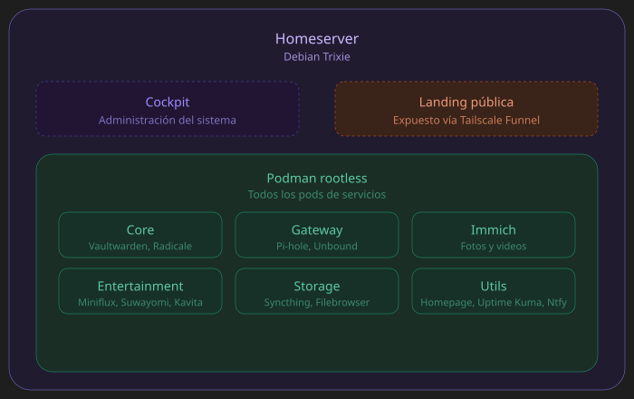

Infraestructura privada, modular y de bajo mantenimiento. Sin telemetría, sin dependencia de servicios cloud comerciales, con cero puertos expuestos al público salvo esta misma web. Actualmente de forma dinámica administro la apertura al público por tailscale funnel a medida de mis necesitades.
Cada stack corre como un pod de Podman independiente, gestionado como
servicio de systemd a nivel usuario. Esto mantiene las
responsabilidades aisladas: reiniciar o actualizar un pod no afecta a los
demás.

graph TD
subgraph Internet_Publico ["Internet Público"]
Visitor["Visitante"]
end
subgraph Tailnet_Privada ["Tailnet Privada - Tailscale"]
Owner["Dispositivos Autenticados"]
end
subgraph Host_Server ["Host: Debian 13 Trixie"]
TSFunnel["Tailscale Funnel
(expone SOLO el portfolio a Internet)"]
TSServe["Tailscale + MagicDNS
Proxy HTTPS único"]
Landing["Landing Page Portfolio
HTML / CSS / JS estático
servido directo por Tailscale Serve"]
Cockpit["Cockpit
Corre en el Host, fuera de Podman
Solo accesible vía Tailnet HTTPS"]
Cron["Cron Jobs
Backups programados"]
subgraph Podman_Engine ["Podman (rootless) - Pods"]
PodmanRoot["Motor Podman"]
subgraph Pod_Core ["Pod: Core"]
Vaultwarden["Vaultwarden"]
Radicale["Radicale"]
end
subgraph Pod_Network ["Pod: Network"]
Pihole["Pi-hole
(filtrado DNS)"]
Unbound["Unbound
DoT → Mullvad"]
end
subgraph Pod_Storage ["Pod: Storage"]
Syncthing["Syncthing"]
Filebrowser["Filebrowser"]
end
subgraph Pod_Utils ["Pod: Utils"]
Homepage["Homepage"]
Ntfy["Ntfy"]
Kuma["Uptime Kuma"]
end
subgraph Pod_Immich ["Pod: Immich"]
ImmichSrv["Immich Server"]
ImmichML["Immich Machine Learning"]
end
subgraph Pod_Entertainment ["Pod: Entertainment"]
Miniflux["Miniflux"]
Suwayomi["Suwayomi"]
Kavita["Kavita"]
Flaresolverr["Flaresolverr"]
end
end
end
subgraph Almacenamiento ["Hardware: Almacenamiento"]
SSD_OS[("SSD 120GB
Sistema Operativo")]
SSD_Data[("SSD 480GB
Datos: volúmenes Podman
Toda la información y contenedores")]
HDD_Daily[("HDD 480GB
Backup Diario")]
HDD_Weekly[("HDD 480GB
Backup Semanal")]
end
subgraph Salida_DNS ["Salida DNS Externa"]
Mullvad[("Mullvad DNS
vía DoT")]
end
%% Conexiones de acceso
Visitor --> TSFunnel
TSFunnel --> Landing
Owner --> TSServe
TSServe --> Cockpit
TSServe --> PodmanRoot
PodmanRoot --> Pod_Core
PodmanRoot --> Pod_Network
PodmanRoot --> Pod_Storage
PodmanRoot --> Pod_Utils
PodmanRoot --> Pod_Immich
PodmanRoot --> Pod_Entertainment
%% DNS
Pihole --> Unbound
Unbound -.->|DoT| Mullvad
%% Notificaciones
Kuma -.->|notifica| Ntfy
%% Storage
Landing -.-> SSD_OS
Cockpit -.-> SSD_OS
PodmanRoot ==> SSD_Data
Cron --> HDD_Daily
Cron --> HDD_Weekly
SSD_Data -.->|backup| HDD_Daily
SSD_Data -.->|backup| HDD_Weekly
classDef public fill:#f9d5e5,stroke:#333,stroke-width:2px;
classDef private fill:#d5e8d4,stroke:#333,stroke-width:2px;
classDef host fill:#fff2cc,stroke:#333,stroke-width:2px;
classDef storage fill:#e1d5e7,stroke:#333,stroke-width:2px;
classDef dns fill:#cfe2f3,stroke:#333,stroke-width:2px;
classDef standalone fill:#ffe6cc,stroke:#333,stroke-width:2px;
class Visitor public;
class Owner private;
class Host_Server host;
class Podman_Engine host;
class Landing,Cockpit,TSFunnel,TSServe standalone;
class PodmanRoot host;
class SSD_OS,SSD_Data,HDD_Daily,HDD_Weekly storage;
class Mullvad dns;
podman-compose, orquestado vía systemd a nivel
usuario
Core - Vaultwarden (contraseñas), Radicale (calendarios y contactos)
Gateway - Pi-hole (bloqueo de publicidad), Unbound (DNS recursivo con DoT)
Immich - Backup y galería de fotos y videos con búsqueda por ML
Entertainment - Miniflux (RSS), Suwayomi (lector de comics), Kavita (biblioteca digital)
Storage - Syncthing (sincronización), Filebrowser (gestión de archivos)
Utils - Homepage (dashboard), Uptime Kuma (monitoreo), Ntfy (notificaciones push)
Origenes del proyecto
Mi servidor personal inició por medio de una instancia de una Raspberry Pi 4b. Esto despertó mi entusiasmo en la administración de servidores y me ha permitido ir aprendiendo en mi día a día. Actualmente esa Raspberry Pi se encuentra vinculada al nodo principal permitiendo redundancia para los servicios primordiales como Vaultwarden, Pihole o Unbound. Así mantengo una alta disponibilidad ante cualquier inconveniente que pueda llegar a ocurrir
Self-hosted vs. cloud
Siempre criterio de elección fue el mismo: privacidad y control sobre datos sensibles. El costo es mantenimiento propio, backups, actualizaciones y disponibilidad que en un servicio cloud vendría resuelto de fábrica. Para este tipo de datos, priorizo ese control incluso a costa del trabajo extra. Este fue el principio para la construcción de este homeserver.
Cockpit detrás de Tailscale Serve
Cockpit ya sirve su propia interfaz por HTTPS con certificado autofirmado.
Al exponerlo detrás de tailscale serve, que también termina
TLS, el resultado era una segunda capa de cifrado envolviendo a la
primera. El navegador recibía una respuesta cifrada dos veces y fallaba al
renderizar la interfaz.
Sumado a eso, Cockpit valida el header Origin de cada request
como protección CSRF. Al llegar las requests desde el dominio de Tailscale
en vez del hostname local que Cockpit esperaba, las rechazaba
silenciosamente.
La solución fue configurar Cockpit para escuchar en HTTP plano localmente y agregar el dominio de Tailscale a los orígenes permitidos en la configuración de Cockpit, para que dejara de tratar esas requests como intentos de CSRF.
Documentación y fuentes técnicas usadas para diseñar esta infraestructura:
La configuración completa está disponible en el repositorio:
github.com/ncorrea-13/homeserver
Última actualización: julio 2026 · MIT License